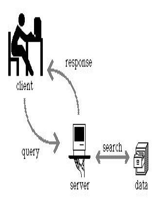

Ringraziamenti
- Questa presentazione è una riduzione di due
presentazioni tenute da Angelo Mario Del Grosso
- Il materiale di questa presentazione può
essere riutilizzato nel rispetto delle leggi sul
copyright e delle regole del W3C
Internet non è il Web e il Web non è
Internet
-
Internet

-
Infrastruttura telematica mondiale, una rete di reti,
tramite la quale sono connessi diversi centinaia di
milioni di calcolatori distribuiti in tutto il pianeta
-
Web
-
World Wide Web, è un servizio (il più
conosciuto e il più diffuso) che sfrutta
Internet e consente la pubblicazione, la condivisione e
la fruizione di contenuti digitali.
Internet è una rete di reti

Indirizzamento degli elaboratori
-
Host
-
- computer (dispositivo) che si collega a internet
per scambiare dati, risorse e servizi
- a ogni host viene assegnato un numero
(indirizzo IP) e un nome (di dominio) che
sono univoci per tutta la rete Internet
-
Indirizzo IP
-
- numero di 32 cifre binarie (32 bit)
- utilizzato per identificare il destinatario di un
messaggio
- per comodità si rappresenta l'IP
suddiviso in quattro gruppi da otto bit mediante
numeri decimali
Domini e nomi di domini
-
Indirizzo Simbolico
-
- ricordare le varie sequenze numeriche
corrispondenti agli indirizzi dei computer a cui ci
si intende connettere può essere molto scomodo
- quindi ad ogni host di Internet può essere
associato un nome simbolico (domain name), composto
da stringhe di caratteri
weblab.isti.cnr.it
-
Dominio
-
- Settori di suddivisione dell'intera rete.
- A loro volta divisi in sottodomini, e così
via per vari livelli; ogni sottodominio fa parte del
dominio gerarchicamente superiore.
- Alla base della piramide ci sono i singoli host.
- La parte di indirizzo più a destra nella
stringa indica il dominio più alto della
gerarchia, nel nostro caso 'it'.
- In genere, il livello più alto identifica
il paese o il tipo di ente che possiede il computer
in questione
- Gli altri livelli della gerarchia, muovendosi da
destra a sinistra, scendono per i vari sottodomini
fino ad identificare uno specifico host
DNS - Domain Name System
- Dal punto di vista tecnico il Domain Name
Service è costituito da un sistema di
database distribuiti nella rete chiamati
name server, che sono collegati tra loro
- Ogni dominio e ogni sottodominio ha almeno un name
server di riferimento
- Quest'ultimo svolge la funzione di tradurre i
nomi in indirizzi numerici per conto degli host
o di altri name server
- La comunicazione effettiva tra gli host avviene
sempre attraverso gli indirizzi numerici
- La traduzione viene chiamata tecnicamente
risoluzione
Comunicazione In Internet
-
Client/Server
-
La comunicazione sulla rete è di tipo gerarchico
ed è basata sul modello client-server
-
Protocollo di comunicazione
-
Regole che permettono di disciplinare lo scambio dei
messaggi
Client/Server
-
Client
-
- Un client è un programma che si connette
ad un altro programma (server), fa una richiesta ed
aspetta una risposta
-
Server
-
- Un server è un programma ”in
ascolto“ su un dispositivo
- Quando arriva una richiesta dal client, il server
analizza questa richiesta elabora una risposta e la
invia al client
- Un server, generalmente, può servire
più client contemporaneamente

Il Servizio Web
- Al di sopra della rete basata su TCP/IP è
possibile costruire delle applicazioni.
E' possibile sfruttare la rete per offrire
servizi agli utenti
- Il World Wide Web è un servizio applicativo di
Internet
HTTP
- Un Web Server (un server che
fornisce servizi sul Web) è sostanzialmente un
HTTP Server (un server che comunica mediante il
protocollo HTTP) e gestisce 2 flussi di informazioni:
-
HTTP request: le richieste in
arrivo dai client (HTTP client)
-
HTTP response: le risposte del
server, inviate ai client (HTTP client)
-
Un Web browser è un HTTP
client, cioè un programma che interagisce con un
HTTP server, richiedendone i servizi.
E'dotato di un interprete HTML e di un'interfaccia
grafica per visualizzare le pagine Web
Il Protocollo HTTP
- HTTP (HyperText Transfer Protocol) è
stato creato per il trasferimento di documenti
strutturati in formato HTML (HyperText Marked
Language).
- L'HTTP è un protocollo "stateless" (senza
memoria) che permette di individuare una risorsa (i.e:
documento HTML, ma non solo) in maniera veloce.
- La scelta di un protocollo che non "conserva memoria"
della connessione fatta è stata necessaria
affinché fosse possibile saltare velocemente da un
server ad un altro attraverso i link
ipertestuali.
- È gestito da un software (server
HTTP) residente sugli host che intendono essere
fornitori di informazioni. Chi vuole accedere alle
informazioni fornite dal server HTTP deve utilizzare un
software client (browser) in grado di
interpretare le informazioni inviate dal server.
Fasi di una connessione e comunicazione HTTP
L'acquisizione e eventuale visualizzazione di una risorsa
da parte del client può essere schematizzata in
quattro fasi:
-
CONNESSIONE:
-
Il client crea una connessione TCP-IP con il server
usando il suo nome di dominio (o il numero IP) ed il
numero della porta di trasmissione; se non viene
fornito il numero di porta, il protocollo assume per
default che il numero sia 80.
-
RICHIESTA DOCUMENTO:
-
Il client invia la richiesta di un documento mediante
una riga di caratteri ASCII terminata da una coppia di
caratteri CR-LF (Carriage Return, Line Feed).
-
RISPOSTA:
-
La risposta inviata dal server è un messaggio in
linguaggio HTML nel quale è contenuto il
documento richiesto (o un messaggio d'errore).
-
DISCONNESSIONE:
-
Il server subito dopo aver spedito il documento si
disconnette. Comunque anche il client può
interrompere la connessione in ogni momento, in questo
caso il server non registrerà nessuna
condizione d'errore.
Esercizio
- Installare un server web (Apache) sulla propria
macchina
- Configurarlo in modo da utilizzare un DNS locale
(file C:\Windows\System32\drivers\etc\hosts nei sistemi
Windows)
 Oreste
Signore, <oreste@w3.org>
Oreste
Signore, <oreste@w3.org>